moco · 六份截帧分析
分析日期：2026-10-20。范围：入口、绿色战斗、暗色战斗，以及三份亮绿场景技能截帧；接口为 Vulkan。六份均完整包含游戏场景与 UI。
核心做法：半分辨率 3D 场景＋4× MSAA＋全分辨率 UI；运行时骨骼矩阵纹理驱动蒙皮；静态／动态阴影、环境光照数据纹理和粒子图集共同构成画面。 技能2主要多在粒子绘制，入口则包含较多角色与阴影。
这些文件是不同场景／战斗时刻，不能当作高低画质档位对照。正文保留代表模型和关键功能，完整 Shader 分组、纹理清单及验证口径见详细附录。
目录
总览与六帧对比
绘制数量与构成
| 指标 | 入口 | 绿色战斗 | 暗色战斗 | 技能1 | 技能2 | 技能3 |
|---|---|---|---|---|---|---|
| 整帧绘制次数 | 915 | 581 | 552 | 558 | 801 | 636 |
| 主场景绘制次数 | 656 | 459 | 338 | 355 | 626 | 420 |
| 提交三角形（含实例及重复通道） | 639,681 | 239,173 | 285,329 | 296,607 | 237,257 | 258,887 |
| 绑定纹理数／其中有Mip | 165 / 134 | 47 / 23 | 67 / 41 | 91 / 56 | 63 / 27 | 81 / 46 |
三角形按 Triangle List 的索引数÷3、Triangle Strip 的顶点／索引数−2计算，乘实例数；包含条带退化三角形、不可见提交、阴影和轮廓重复绘制，并非唯一模型面数。绘制次数也不等于对象数或 GPU 耗时。
| 绘制分类（次） | 入口 | 绿色战斗 | 暗色战斗 | 技能1 | 技能2 | 技能3 |
|---|---|---|---|---|---|---|
| 场景模型 | 280 | 376 | 252 | 187 | 132 | 188 |
| 骨骼模型 | 104 | 16 | 18 | 28 | 12 | 19 |
| 动态阴影 | 85 | 13 | 19 | 30 | 10 | 18 |
| 粒子与平面特效 | 272 | 67 | 67 | 139 | 481 | 212 |
| 轮廓遮罩 | 0 | 0 | 1 | 2 | 2 | 1 |
| 轮廓合成 | 0 | 0 | 1 | 1 | 1 | 1 |
| UI与文字 | 173 | 108 | 193 | 170 | 162 | 196 |
| 场景放大与转向 | 1 | 1 | 1 | 1 | 1 | 1 |
技能2共801次绘制，其中481次是粒子，占整帧约60.0%、主场景约76.8%。 入口有104次骨骼模型、85次动态阴影，二者合计约53.2万次三角形提交。两类负担不同，不能直接用总 Draw 数给实际帧率排名。
场景和技能画面
| 入口 | 绿色战斗 | 暗色战斗 |
|---|---|---|
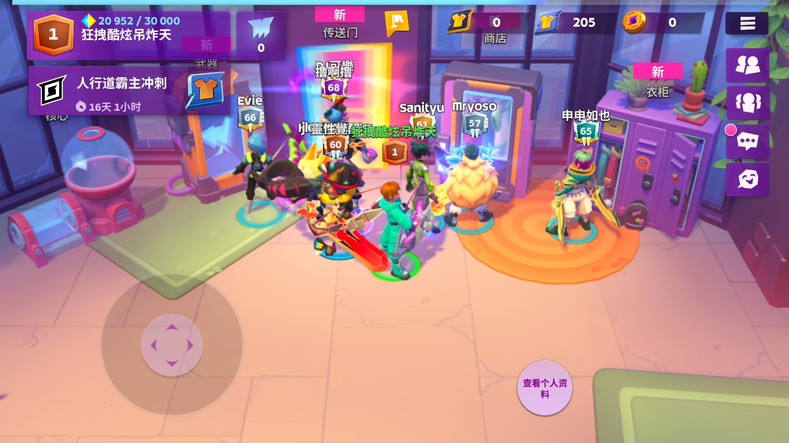 | 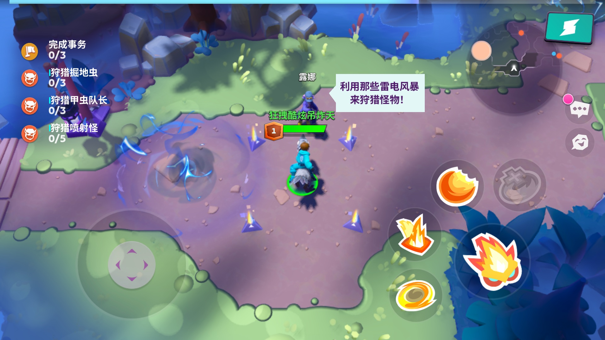 | 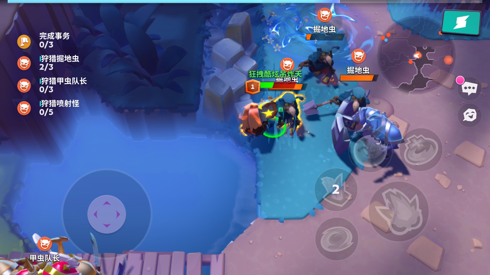 |
| 亮绿＋技能1 | 亮绿＋技能2 | 亮绿＋技能3 |
|---|---|---|
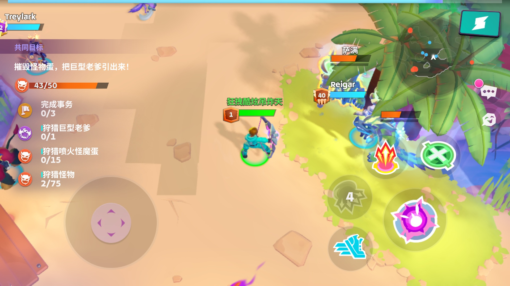 | 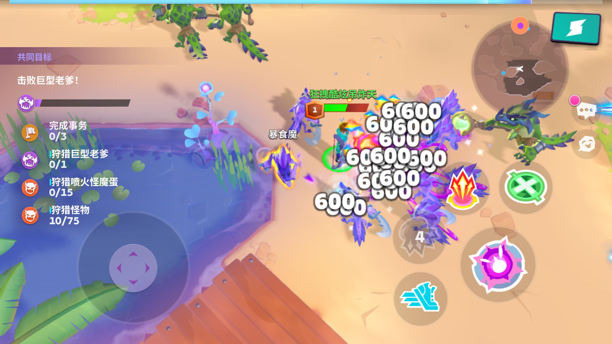 | 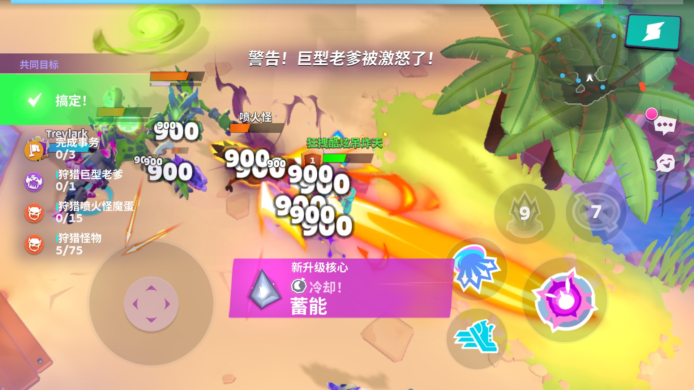 |
三份技能帧的粒子数为139、481、212，但镜头位置、怪物分布、动作和技能阶段也在变化。这是三个时刻的实际工作量，不是开启某个技能后的严格增量测试。
渲染流程与基础配置
分辨率、MSAA与UI
六帧都是：场景960×540 → 4× MSAA解析到960×540单采样颜色图 → 放大并转向 → 横屏1920×1080 UI。场景宽高为显示画面的0.5，像素数为25%；UI没有跟着降为半分辨率。 捕获的显示附件存为1080×1920，按横屏方向阅读就是1920×1080。
这是渲染目标尺寸，不能据此说游戏修改了系统 DPI。4× MSAA增加覆盖／深度采样，不等于把场景材质计算强制做四遍；代表流水线的 sample shading 为关闭。
| 阶段 | 输出／功能 | 六帧情况 |
|---|---|---|
| 动态阴影 | D16单采样深度图 | 本帧重绘，尺寸随场景变化 |
| 轮廓遮罩 | 小尺寸R8图 | 暗色、技能1／2／3存在；入口和绿色帧没有此通道 |
| 3D场景 | BGRA8颜色＋D24S8深度，均4× MSAA | 模型、材质特效和粒子在此绘制 |
| MSAA解析 | 同尺寸单采样BGRA8 | RenderPass解析附件，不是第二张G-buffer |
| 显示与UI | RGBA8单采样目标 | 先放大场景，再绘图标、文字和伤害数字 |
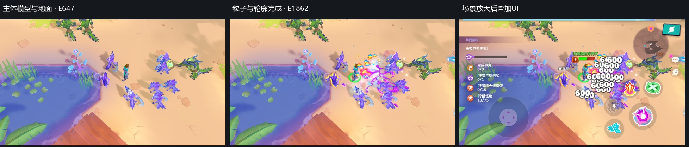
阴影与局部轮廓
静态阴影与动态阴影都有。 代表材质同时读取 staticShadowmap 与 shadowmap；动态图先绘制角色等投影物，再供场景采样。静态图是离线制作、进入地图时生成还是跨帧缓存，单帧无法区分。
技能2：动态阴影10次绘制，D16图1088×496；静态阴影图2048×1392。独立副本只关闭这10次动态阴影后，最终161,223个RGB像素变化，人物／怪物投影明显减少。
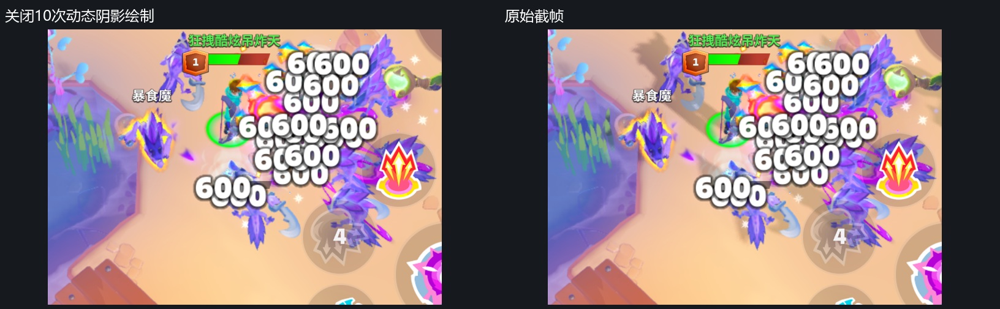
黄色怪物轮廓采用遮罩扩展方案。 技能2先用2次绘制把选中网格画入352×192的R8遮罩，再用1次局部合成取中心及周围8个方向的样本，生成彩色外轮廓。遮罩值还受模型高度影响。它是局部图像处理，不是法线外扩描边或整屏Bloom。
| 轮廓遮罩（灰度显示） | 同帧关闭／开启轮廓 |
|---|---|
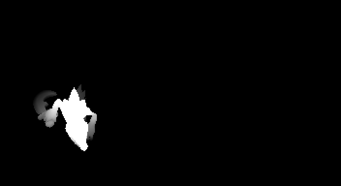 | 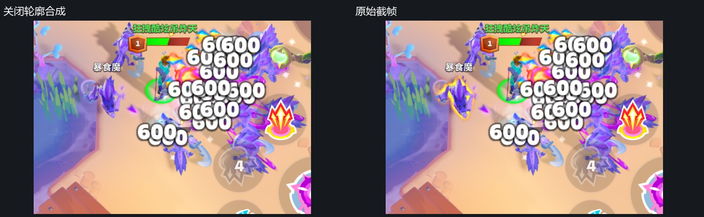 |
关闭合成E1136后，最终10,647个RGB像素变化。这里是诊断副本的绘制开关，不代表游戏提供独立设置。
颜色处理与整屏后处理
| 项目 | 本次结论 | 依据 |
|---|---|---|
| MSAA | 明确使用4× | 颜色／深度资源及流水线均为4采样 |
| UI文字边缘 | SDF距离场软化 | 字体Shader有距离场曲线和 fwidth 屏幕导数 |
| 局部轮廓 | 明确存在 | R8遮罩＋邻域采样合成＋同帧开关 |
| 材质内色调和颜色处理 | 明确存在 | 代表材质有亮度缩放、非线性压缩、饱和度调整及Gamma类幂运算 |
| 雾／环境色 | 材质内处理 | 根据位置和环境参数着色；部分具体物体的系数可为0 |
| Bloom、SSAO、景深、运动模糊 | 未识别到独立整屏链 | 六帧没有对应提取／模糊／合成链 |
| FXAA、SMAA、TAA | 未识别到专用通道 | 最后的场景放大Shader仅单次采样；没有历史重投影链 |
| 全屏LUT调色 | 未识别到 | 128×32彩色查找图用于间接光照，不应误认成最终画面LUT |
准确表述是：未发现常见整屏后处理链，但存在4× MSAA、局部轮廓处理和材质内颜色处理。 主场景是8位颜色目标，不能因材质内部出现大于1的值，就把整条管线称为HDR后处理。
普通模型与材质规范
面数均为单次网格／部件、单实例，不把阴影和重复实例加进去。
| 代表资源 | 面数 | 基础说明 |
|---|---|---|
| 青色人物身体 · 绿色E272 | 6,240 | 不含头部、背部等其他部件；GPU蒙皮 |
| 紫色怪物主体 · 技能2 E179 | 3,984 | 当前一次绘制3实例，另有附属部件 |
| 粉色植物 · 技能2 E154 | 2,768 | 普通3D网格 |
| 岩石块 · 绿色E153 | 968 | 普通3D网格 |
| 草丛组 · 绿色E311 | 702 | 当前2实例 |
| 地面／覆盖片代表 · 技能2 E647 | 2／实例 | 当前34实例，重复方片拼接覆盖 |
| 人物身体 | 怪物主体 | 植物 | 岩石 |
|---|---|---|---|
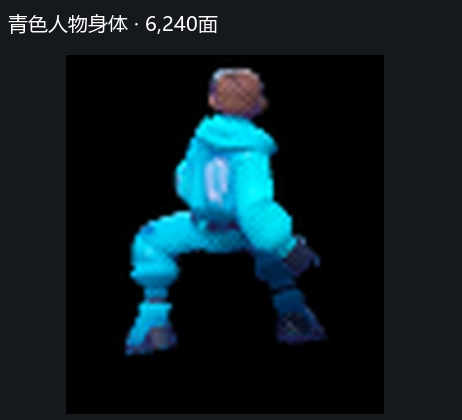 | 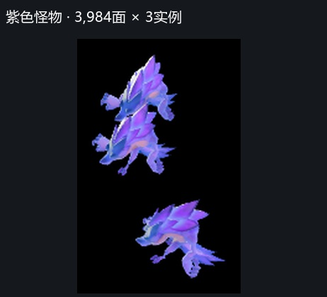 | 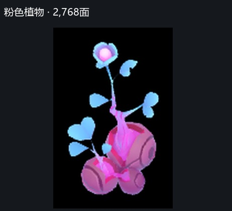 | 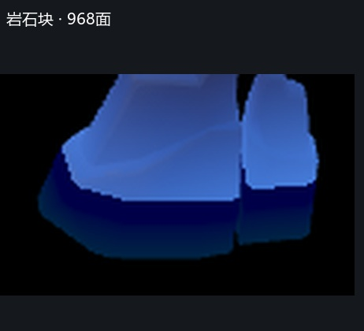 |
截图来自对应绘制后的真实画面，黑底是此阶段尚未画地面；小模型为局部放大。人物身体截图中已存在此前绘制的头部，6,240面仅对应本次身体网格。
场景常见512²调色板／材质图；角色代表使用512²颜色图，以及金属度、粗糙度、高光强度等打包图。代表Shader用网格法线参与直接光、间接光、阴影与轮廓光计算。各材质按开关使用功能，不能把全部声明都算成每个物体的固定成本。
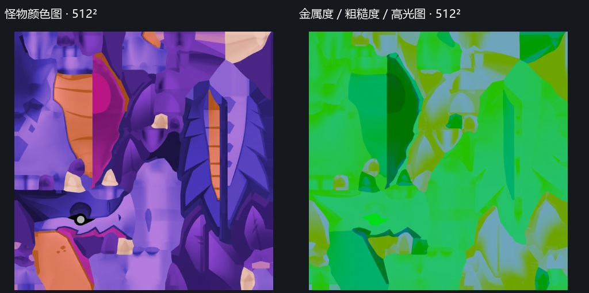
水面使用专用材质：噪声纹理随时间和位置扰动法线，地面距离图调节近岸法线强度，再计算高光、阴影和环境色，采用预乘Alpha叠加。技能2 E647是34个两面水面片实例；代表程序没有读取场景颜色或独立反射图，未见屏幕空间反射／折射通道。
骨骼动画方案
矩阵纹理如何使用
这里是GPU蒙皮＋运行时骨骼矩阵表，未发现VAT顶点动画读取。它与“把全部动作帧预烘焙进骨骼图”也不能直接画等号。
- 顶点存4个8位无符号骨骼索引，加1个32位打包权重，共8字节；不是4个浮点权重的16字节布局。
- 每实例提供骨骼表起始偏移。Shader把偏移加本地骨骼编号，再定位数据纹理。
- 每个矩阵占3个RGBA32F纹素，即12个浮点数、48字节。图固定宽768，每行容纳256个矩阵槽。
- 第一根骨骼先读3次。打包权重不为0时再读其余3根，最多共12次整数纹素读取；解包权重后混合矩阵，变换位置和法线。
- 代表帧骨骼图在E17上传，随后才进入阴影与主场景。顶点程序没有按“动作编号＋前后动画帧”对两套姿态插值。
这说明本帧提交的是已经准备好的姿态表，GPU负责逐顶点蒙皮。不能从图高推算动作数／帧数，也不能说整个Animator或状态机搬到了GPU。 CPU如何计算和混合姿态不在图形截帧的可见范围内。
容量和实例合批
| 截帧 | 骨骼图ID | 尺寸 | 矩阵槽容量 | 逻辑容量 |
|---|---|---|---|---|
| 入口 | 72514 | 768×16 | 4,096 | 192 KiB |
| 绿色战斗 | 210008 | 768×2 | 512 | 24 KiB |
| 暗色战斗 | 248873 | 768×4 | 1,024 | 48 KiB |
| 技能1 | 1548020 | 768×4 | 1,024 | 48 KiB |
| 技能2 | 1546508 | 768×4 | 1,024 | 48 KiB |
| 技能3 | 1546508 | 768×4 | 1,024 | 48 KiB |
槽容量表示整张表能存多少矩阵，不是单模型有效骨骼数。这些图均RGBA32F、单层Mip，使用LOD0整数坐标读取。
已看到实例合批：技能2 E179把同一份3,984面网格绘制3实例，E219绘制5实例，实例数据带独立模型矩阵及骨骼表偏移。阴影通道也需要蒙皮，因此蒙皮计算会在多个通道重复发生。
粒子与特效
功能和绘制数量
| 主要粒子家族（次） | 入口 | 绿色 | 暗色 | 技能1 | 技能2 | 技能3 |
|---|---|---|---|---|---|---|
| 单纹理＋顶点调色 | 223 | 63 | 63 | 125 | 423 | 140 |
| 纹理＋渐变映射 | 49 | 4 | 4 | 14 | 58 | 72 |
| 合计 | 272 | 67 | 67 | 139 | 481 | 212 |
| 功能 | 单纹理调色 | 渐变映射 | 局部轮廓（单列） |
|---|---|---|---|
| 输入 | 图集＋两组顶点颜色 | 图集＋渐变图＋渐变行编号＋顶点颜色 | R8网格遮罩＋轮廓颜色 |
| 像素采样 | 1个采样点 | 2个采样点 | 中心1次，分支内再采周围8次 |
| 着色 | 纹理乘色／透明度，再加附加色 | 取图案亮度，按渐变条重新上色 | 遮罩边缘扩展并着色 |
| 混合 | 加法、预乘Alpha等 | 加法、预乘Alpha等 | 局部透明叠加 |
| 噪声扰动／溶解 | 此主要家族未见对应多贴图逻辑 | 同左 | 不适用 |
| 软粒子深度渐隐 | 未读取场景深度 | 未读取场景深度 | 不适用 |
简单Shader配合图集内容、顶点数据和多层叠加，就能形成很多效果。不能由一帧确认动画帧切换或粒子模拟在CPU还是GPU；六帧均没有Compute Dispatch。
技能2的481次粒子中，176次加法混合、303次预乘Alpha混合、2次目标颜色调制。混合模式不是额外的Shader功能家族。
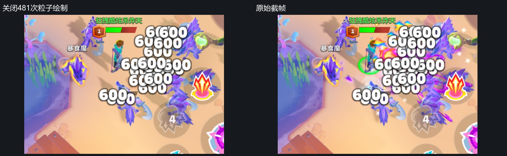
独立副本关闭481次粒子后，最终281,918个RGB像素变化。伤害数字、UI按钮和黄色轮廓仍在，它们不属于这481次粒子。部分粒子提交被遮挡、透明度很低或在画面外，不一定都产生可见贡献。
两个代表例子
例一：红橙色光团，技能2 E1008。 使用渐变家族：从基础图案取得亮度，再查渐变条生成颜色。下图仅增加这一次绘制。
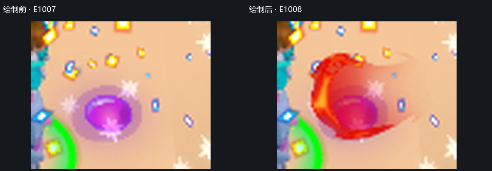
例二：紫色碎片／拖尾层，技能2 E1189。 使用单纹理家族，由图集形状、顶点乘色及附加色构成；不需要完整Bloom链也能产生明亮外观。
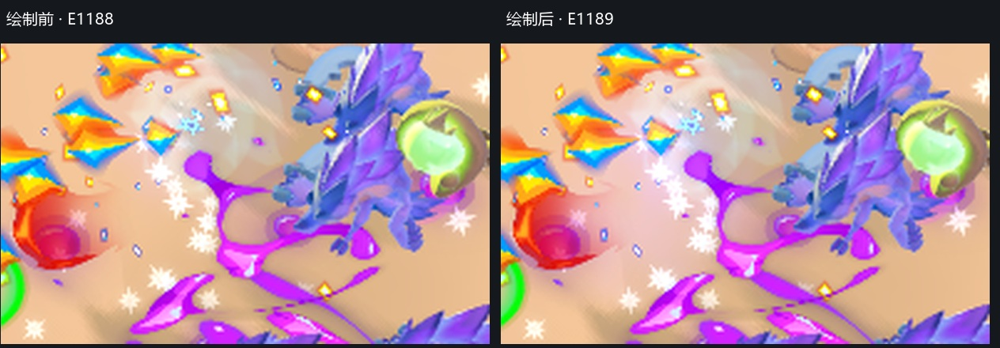
两图是960×540场景的局部放大，用于看清单次绘制贡献。
贴图规格、Mip与容量
分类规范
普通模型材质多数有Mip，粒子图集、UI图集、骨骼和环境数据图均以单层为主；本次绑定的粒子图集没有Mip。 下表把共享数据图从普通材质图中单列。
| 绑定纹理数／其中有Mip | 入口 | 绿色战斗 | 暗色战斗 | 技能1 | 技能2 | 技能3 |
|---|---|---|---|---|---|---|
| 模型材质 | 133 / 132 | 23 / 21 | 41 / 39 | 56 / 53 | 26 / 24 | 46 / 43 |
| 光照遮罩 | 3 / 2 | 3 / 2 | 3 / 2 | 4 / 3 | 4 / 3 | 4 / 3 |
| 粒子图集 | 16 / 0 | 7 / 0 | 8 / 0 | 16 / 0 | 18 / 0 | 16 / 0 |
| 粒子渐变图 | 1 / 0 | 1 / 0 | 1 / 0 | 1 / 0 | 1 / 0 | 1 / 0 |
| UI与文字图集 | 5 / 0 | 6 / 0 | 6 / 0 | 6 / 0 | 6 / 0 | 6 / 0 |
| 骨骼矩阵 | 1 / 0 | 1 / 0 | 1 / 0 | 1 / 0 | 1 / 0 | 1 / 0 |
| 环境与光照数据 | 3 / 0 | 3 / 0 | 3 / 0 | 3 / 0 | 3 / 0 | 3 / 0 |
| 阴影深度 | 2 / 0 | 2 / 0 | 2 / 0 | 2 / 0 | 2 / 0 | 2 / 0 |
| 轮廓遮罩 | — | — | 1 / 0 | 1 / 0 | 1 / 0 | 1 / 0 |
此表按资源去重并分配主用途，同一纹理可能跨阶段共享。绑定表可能有默认占位图或被材质开关跳过的输入，因此“绑定”不等于每个像素实际读取。有Mip也不代表本帧采到了某个指定层级。
| 类别 | 代表规格 | Mip／说明 |
|---|---|---|
| 模型调色板／材质 | 常见512²，另有256²、1024²等 | 512²代表有9或10层，部分链停止于2×2 |
| 粒子图集 | 多张4096²，也有非整方图集 | 无Mip；线性过滤不能替代Mip |
| UI图集 | 多张4096²，还有约3904×4080 | 无Mip；字体使用SDF改善边缘 |
| 光照遮罩 | 代表256² RGBA8 | 9层Mip，可投射云影／树影类图案 |
| 间接光查找图 | 128×32 RGBA8 | 无Mip；属于光照输入，不是全屏LUT |
| 环境参数图 | 技能帧100×900 RGBA8＋100×200 RGBA16F | 无Mip；按世界位置查询的数据 |
| 骨骼矩阵图 | 768×2～16 RGBA32F | 无Mip；整数寻址 |
| 阴影／轮廓目标 | D16／R8 | 无Mip，尺寸见前文 |
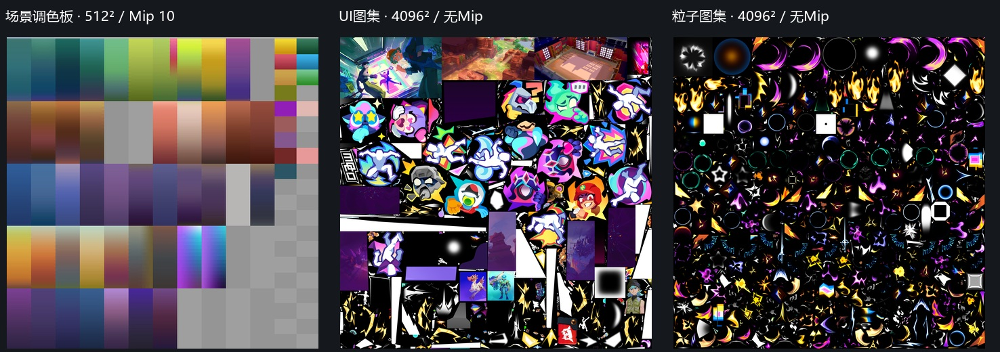
捕获中未见ASTC、ETC、BC或PVRTC块压缩资源。 颜色素材主要为RGBA8_UNORM；另有BGRA8目标、RGBA16F／RGBA32F数据图、R8遮罩、D16／D24S8深度。这是该捕获路径的GPU资源，不能直接推断安装包源图、其他设备或接口的压缩设置。
纹理容量口径
按宽高、格式、Mip、数组和采样数计算的逻辑纹理数据容量如下，不含驱动对齐、压缩元数据、网格、程序、CPU副本或引擎缓存，不等于进程内存／峰值显存。
| 逻辑容量（MiB） | 入口 | 绿色战斗 | 暗色战斗 | 技能1 | 技能2 | 技能3 |
|---|---|---|---|---|---|---|
| 本帧绑定纹理去重 | 855.90 | 524.76 | 536.32 | 615.98 | 646.21 | 584.85 |
| 捕获列出的全部纹理 | 855.90 | 524.76 | 536.32 | 615.98 | 646.21 | 584.85 |
单张4096² RGBA8、无Mip图集就是64 MiB。技能2按主用途分配的粒子图集约350.59 MiB、UI／字体约221.38 MiB，而骨骼矩阵图只有48 KiB。此样本的容量重点在大图集，骨骼表很小。 本次未访问的图集区域也包含在整张图容量中。
960×540、4× MSAA颜色目标的逻辑样本数据约7.91 MiB，D24S8深度同样约7.91 MiB，解析颜色图约1.98 MiB。RenderDoc的byteSize可能含实现差异／对齐，没有直接拿来当手机物理占用；原始值保存在全部纹理清单。
绘制数量、面数和资源容量可作为排查线索；真实GPU耗时、带宽、发热与帧率仍需在目标设备测量。
展开详细附录：目标、Shader与验证数据
moco · 截帧分析详细附录
分析日期：2026-10-20。返回正文。原始RDC位于报告文件夹的上一级，不包含在分享压缩包中。
目录
范围与计算口径
| 简称 | 文件 | 绘制次数 |
|---|---|---|
| 入口 | moco_入口.rdc | 915 |
| 绿色战斗 | moco_战斗场景绿色.rdc | 581 |
| 暗色战斗 | moco_战斗场景暗色.rdc | 552 |
| 技能1 | moco_战斗场景亮绿+技能.rdc | 558 |
| 技能2 | moco_战斗场景亮绿+技能2.rdc | 801 |
| 技能3 | moco_战斗场景亮绿+技能3.rdc | 636 |
六份均为Vulkan，包含完整场景与UI，全部0次Compute Dispatch。入口、绿色和暗色位于不同位置，技能1／2／3也不是静态A/B。代表材质特化参数rogue_lowend均为0，但不能仅凭该参数替代游戏菜单来命名画质档位。
按目标用途、顶点输入、Shader算法和代表截图分类。骨骼分类包括所有带骨骼权重的网格，不等于玩家人数；粒子不包含UI数字，轮廓遮罩和合成单列。面数含实例、条带退化三角形与阴影等重复通道。GPU实际执行的顶点／片元数量可能不同。
目标和采样数
| 截帧 | 动态阴影 | 主颜色／解析颜色ID | 主深度ID | 显示颜色ID |
|---|---|---|---|---|
| 入口 | 72711 · 1032×1312 D16 | 60536 / 60546 | 60541 | 6003 |
| 绿色战斗 | 211250 · 1240×728 D16 | 208306 / 208316 | 208311 | 5972 |
| 暗色战斗 | 252600 · 1144×680 D16 | 208306 / 208316 | 208311 | 5941 |
| 技能1 | 1550909 · 1088×488 D16 | 1540123 / 1540133 | 1540128 | 1484708 |
| 技能2 | 1587295 · 1088×496 D16 | 1540123 / 1540133 | 1540128 | 1484646 |
| 技能3 | 1554705 · 1088×496 D16 | 1540123 / 1540133 | 1540128 | 1484677 |
所有主颜色及深度都是960×540、4×；解析颜色960×540、1×；显示颜色1080×1920、1×。技能2原生RenderPass附件索引为颜色[0]、解析[1]、深度2，资源依次1540123、1540133、1540128。两张颜色资源是MSAA解析关系，并非G-buffer。
技能2主场景E127–E1862；E1884使用VS1495053／PS1495054单次采样显示拷贝，后续才是UI。不能用最后的显示图尺寸反推实际场景分辨率。
代表Shader证据
GPU蒙皮
入口VS63079、技能2对应骨骼程序声明boneTexture、a_boneindex、a_boneweights、a_skinningOffsets。代表顶点布局为索引4×UInt8、打包权重1×UInt32，实例提供模型矩阵和骨骼表偏移。
地址：索引 = 实例起始偏移 + 本地骨骼编号，x = 3 × (索引 % 256)、y = 索引 / 256。读取(x,y)、(x+1,y)、(x+2,y)三组float4。第一影响先读；打包权重非0时再读另外三影响。没有前后动画帧的第二套矩阵查找。
绿色210008：768×2 RGBA32F，E17为CopyDst，之后供阴影和主场景顶点程序读取。暗色248873和技能2的1546508同样在E17上传。这支持本帧姿态表的用途，不能说明CPU状态机实现，更不能把表高当作动画帧数。
颜色和环境参数
入口PS15993、PS63085及技能帧同类代表程序启用rogue_color_correction、rogue_colortransform。颜色运算包含乘1.1、限幅到0～1.7、五次多项式压缩、围绕RGB平均值调整色差，最后约pow(color, 0.4675)。数值来自反汇编显示精度；这是嵌入物体材质的变换，不是另开HDR目标的整屏通道。
技能2环境图：rpTex11539713为100×900 RGBA8，rpTex21539716为100×200 RGBA16F；绿色207480为135×1152，207483为135×256。它们是按世界网格纵向排列的多组参数；不能当作普通颜色素材或骨骼图统计。128×32的indirectLightingLookupTex用于间接光照。
代表材质绑定静态／动态阴影、lightMaskTex0…3，并有动态灯位置、颜色、参数输入。绑定或特化启用不意味着所有物体的参数非零。动态图在本帧生成；静态阴影图的生成过程没有出现在这六帧中。
粒子、文字与轮廓
| 用途 | 技能2代表程序 | 算法摘要 |
|---|---|---|
| 单纹理粒子 | VS1494846 / PS1494847 | 图集1次采样＋顶点乘色、Alpha和附加色 |
| 渐变粒子 | VS1496707 / PS1496708 | 基础采样＋渐变图采样；渐变行由顶点输入选择 |
| 轮廓合成 | E1136 / PS1508271 | R8遮罩中心＋周围8方向，局部颜色／Alpha合成 |
| SDF文字 | PS1487427 | 距离场通道、曲线参数、fwidth屏幕导数 |
纹理统计用“本帧绑定”口径，可能包含默认占位或被特化开关跳过的输入。预乘Alpha为One / OneMinusSrcAlpha，加法为One / One，调制为DstColor / OneMinusSrcAlpha；混合状态不会增加Shader纹理采样点。
同帧开关验证
原始RDC只读。独立副本将指定绘制实例数设0；原样转换副本与原始输出逐字节一致，排除了转换造成的画面变化。比较最终1080×1920输出的RGB三通道，像素变化数不是性能数据。
| 验证 | 关闭绘制数 | 改变RGB像素数 | 与原始逐字节相同 |
|---|---|---|---|
| 原样副本 | 0 | 0 | 是 |
| 关闭粒子 | 481 | 281,918 | 否 |
| 关闭动态阴影 | 10 | 161,223 | 否 |
| 关闭轮廓合成 | 1 | 10,647 | 否 |
| 粒子开关全景 | 动态阴影开关全景 |
|---|---|
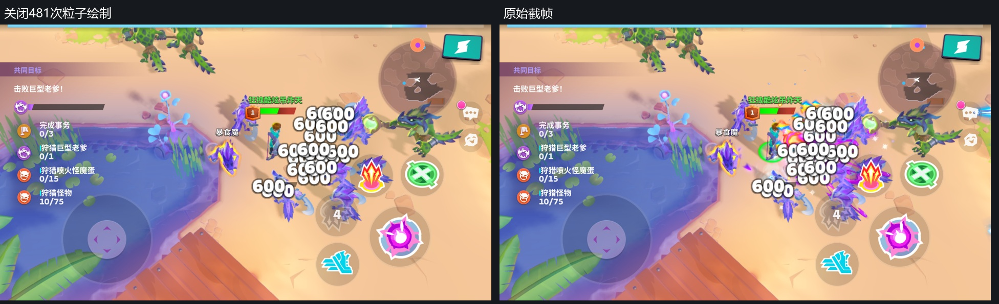 | 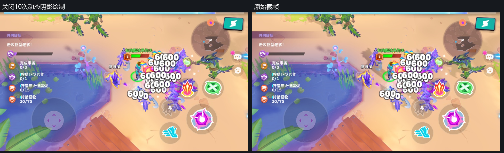 |
完整事件列表和输出哈希见同帧验证数据。这是渲染回放诊断，不是游戏内画质设置或帧率A/B测试。
Shader绘制清单
以VS／PS模块组合分组，同一组合可以更换纹理、材质参数及混合状态。EID只在对应RDC有效。同类效果不逐个重复解释。
入口
| VS / PS | 绘制次 | 首末EID | 用途 |
|---|---|---|---|
| 61859 / 61860 | 223 | 1786～2537 | 粒子与平面特效 |
| 16001 / 16002 | 92 | 404～1535 | 场景模型 |
| 63116 / 63117 | 79 | 64～372 | 动态阴影 |
| 6130 / 8803 | 58 | 2592～3007 | UI与文字 |
| 16034 / 16036 | 52 | 451～2053 | 场景模型 |
| 61842 / 61845 | 49 | 1783～2548 | 粒子与平面特效 |
| 63079 / 63085 | 43 | 638～850 | 骨骼模型 |
| 16023 / 16024 | 41 | 522～1772 | 场景模型 |
| 6130 / 6131 | 41 | 2578～3022 | UI与文字 |
| 8197 / 8198 | 33 | 2580～3019 | UI与文字 |
| 16008 / 16010 | 32 | 1195～1318 | 场景模型 |
| 15991 / 15993 | 28 | 398～1065 | 场景模型 |
| 6096 / 6108 | 26 | 2585～3001 | UI与文字 |
| 16028 / 16029 | 16 | 413～1325 | 场景模型 |
| 63094 / 63096 | 12 | 873～945 | 骨骼模型 |
| 63110 / 63111 | 12 | 1956～2005 | 骨骼模型 |
| 65873 / 65875 | 9 | 548～926 | 骨骼模型 |
| 16041 / 16043 | 9 | 1187～1251 | 场景模型 |
| 14926 / 14927 | 9 | 2588～3016 | UI与文字 |
| 16015 / 16016 | 8 | 439～1336 | 场景模型 |
| 60574 / 60528 | 6 | 39～59 | 动态阴影 |
| 60595 / 16036 | 6 | 539～2011 | 骨骼模型 |
| 63089 / 63093 | 5 | 591～962 | 骨骼模型 |
| 61621 / 16024 | 4 | 857～2026 | 骨骼模型 |
| 14922 / 14923 | 4 | 2796～2974 | UI与文字 |
| 66061 / 66063 | 2 | 607～951 | 骨骼模型 |
| 63101 / 63102 | 2 | 863～867 | 骨骼模型 |
| 88209 / 88210 | 2 | 968～971 | 骨骼模型 |
| 69188 / 69190 | 2 | 2032～2037 | 骨骼模型 |
| 14929 / 14930 | 2 | 2964～2966 | UI与文字 |
| 16091 / 16093 | 1 | 528～528 | 场景模型 |
| 60592 / 16002 | 1 | 535～535 | 骨骼模型 |
| 65885 / 65888 | 1 | 584～584 | 骨骼模型 |
| 63087 / 63088 | 1 | 632～632 | 骨骼模型 |
| 67383 / 67384 | 1 | 932～932 | 骨骼模型 |
| 88212 / 88213 | 1 | 976～976 | 骨骼模型 |
| 60589 / 60590 | 1 | 1778～1778 | 场景模型 |
| 60558 / 60559 | 1 | 2570～2570 | 场景放大与转向 |
绿色战斗
| VS / PS | 绘制次 | 首末EID | 用途 |
|---|---|---|---|
| 16023 / 16024 | 111 | 124～1217 | 场景模型 |
| 16041 / 16043 | 100 | 340～614 | 场景模型 |
| 61859 / 61860 | 63 | 1357～1542 | 粒子与平面特效 |
| 208196 / 208199 | 35 | 1120～1206 | 场景模型 |
| 16008 / 16010 | 33 | 397～688 | 场景模型 |
| 208203 / 208205 | 31 | 1224～1302 | 场景模型 |
| 16015 / 16016 | 29 | 111～758 | 场景模型 |
| 6130 / 8803 | 28 | 1573～1815 | UI与文字 |
| 8197 / 8198 | 28 | 1614～1863 | UI与文字 |
| 6130 / 6131 | 22 | 1578～1866 | UI与文字 |
| 16108 / 16110 | 17 | 153～1114 | 场景模型 |
| 63116 / 63117 | 11 | 46～85 | 动态阴影 |
| 16072 / 16074 | 11 | 1310～1340 | 场景模型 |
| 6096 / 6108 | 11 | 1585～1823 | UI与文字 |
| 14922 / 14923 | 8 | 1637～1826 | UI与文字 |
| 63060 / 63061 | 7 | 256～287 | 骨骼模型 |
| 14926 / 14927 | 7 | 1709～1860 | UI与文字 |
| 208344 / 208345 | 5 | 226～241 | 场景模型 |
| 61842 / 61845 | 4 | 1503～1537 | 粒子与平面特效 |
| 60574 / 60528 | 2 | 39～41 | 动态阴影 |
| 72262 / 72264 | 2 | 299～302 | 骨骼模型 |
| 16001 / 16002 | 2 | 765～1352 | 场景模型 |
| 209522 / 209524 | 2 | 1491～1494 | 骨骼模型 |
| 14929 / 14930 | 2 | 1850～1852 | UI与文字 |
| 60595 / 16036 | 1 | 207～207 | 骨骼模型 |
| 61621 / 16024 | 1 | 211～211 | 骨骼模型 |
| 65756 / 65757 | 1 | 250～250 | 骨骼模型 |
| 63068 / 63070 | 1 | 293～293 | 骨骼模型 |
| 16131 / 16133 | 1 | 311～311 | 场景模型 |
| 208189 / 208190 | 1 | 1344～1344 | 场景模型 |
| 63076 / 63077 | 1 | 1485～1485 | 骨骼模型 |
| 60558 / 60559 | 1 | 1564～1564 | 场景放大与转向 |
| 207528 / 207529 | 1 | 1608～1608 | UI与文字 |
| 8197 / 60571 | 1 | 1672～1672 | UI与文字 |
暗色战斗
| VS / PS | 绘制次 | 首末EID | 用途 |
|---|---|---|---|
| 16023 / 16024 | 107 | 208～1027 | 场景模型 |
| 61859 / 61860 | 63 | 1100～1298 | 粒子与平面特效 |
| 6130 / 8803 | 54 | 1359～1868 | UI与文字 |
| 8197 / 8198 | 46 | 1339～1871 | UI与文字 |
| 6130 / 6131 | 46 | 1349～1874 | UI与文字 |
| 16015 / 16016 | 38 | 159～608 | 场景模型 |
| 208212 / 208213 | 27 | 947～1016 | 场景模型 |
| 208196 / 208199 | 21 | 379～941 | 场景模型 |
| 6096 / 6108 | 18 | 1345～1829 | UI与文字 |
| 208203 / 208205 | 15 | 385～1083 | 场景模型 |
| 16041 / 16043 | 15 | 509～540 | 场景模型 |
| 14922 / 14923 | 15 | 1373～1832 | UI与文字 |
| 63116 / 63117 | 14 | 39～101 | 动态阴影 |
| 16108 / 16110 | 12 | 337～882 | 场景模型 |
| 208223 / 208224 | 11 | 1020～1052 | 场景模型 |
| 14926 / 14927 | 7 | 1715～1862 | UI与文字 |
| 60527 / 60528 | 5 | 56～64 | 动态阴影 |
| 63079 / 63085 | 5 | 406～435 | 骨骼模型 |
| 65873 / 65875 | 5 | 439～459 | 骨骼模型 |
| 16131 / 16133 | 4 | 149～486 | 场景模型 |
| 61842 / 61845 | 4 | 1243～1273 | 粒子与平面特效 |
| 8197 / 60571 | 4 | 1642～1680 | UI与文字 |
| 65756 / 65757 | 2 | 396～399 | 骨骼模型 |
| 209503 / 209516 | 2 | 1231～1234 | 骨骼模型 |
| 14929 / 14930 | 2 | 1852～1854 | UI与文字 |
| 217932 / 217933 | 1 | 123～123 | 轮廓遮罩 |
| 63060 / 63061 | 1 | 423～423 | 骨骼模型 |
| 63094 / 63096 | 1 | 465～465 | 骨骼模型 |
| 208797 / 208798 | 1 | 472～472 | 骨骼模型 |
| 16072 / 16074 | 1 | 1091～1091 | 场景模型 |
| 208189 / 208190 | 1 | 1095～1095 | 场景模型 |
| 217928 / 217929 | 1 | 1217～1217 | 轮廓合成 |
| 63110 / 63111 | 1 | 1225～1225 | 骨骼模型 |
| 60558 / 60559 | 1 | 1331～1331 | 场景放大与转向 |
| 207528 / 207529 | 1 | 1610～1610 | UI与文字 |
技能1
| VS / PS | 绘制次 | 首末EID | 用途 |
|---|---|---|---|
| 1494042 / 1494043 | 128 | 212～870 | 场景模型 |
| 1494846 / 1494847 | 125 | 967～1344 | 粒子与平面特效 |
| 1484845 / 1487427 | 44 | 1379～1777 | UI与文字 |
| 1486874 / 1486875 | 43 | 1395～1832 | UI与文字 |
| 1484845 / 1484846 | 39 | 1375～1835 | UI与文字 |
| 1494070 / 1494071 | 31 | 254～928 | 场景模型 |
| 1495042 / 1495044 | 30 | 45～162 | 动态阴影 |
| 1484829 / 1484831 | 20 | 1390～1786 | UI与文字 |
| 1496707 / 1496708 | 14 | 1006～1246 | 粒子与平面特效 |
| 1493221 / 1493222 | 13 | 1393～1789 | UI与文字 |
| 1495029 / 1495030 | 11 | 340～391 | 骨骼模型 |
| 1494013 / 1494018 | 10 | 247～886 | 场景模型 |
| 1495032 / 1495033 | 8 | 403～443 | 骨骼模型 |
| 1493227 / 1493228 | 7 | 1645～1823 | UI与文字 |
| 1494056 / 1494057 | 5 | 935～943 | 场景模型 |
| 1494115 / 1494116 | 3 | 305～950 | 场景模型 |
| 1495026 / 1495027 | 3 | 397～454 | 骨骼模型 |
| 1495039 / 1495040 | 3 | 1098～1106 | 骨骼模型 |
| 1508274 / 1508275 | 2 | 184～186 | 轮廓遮罩 |
| 1494105 / 1494106 | 2 | 285～289 | 场景模型 |
| 1494060 / 1494062 | 2 | 295～299 | 场景模型 |
| 1494108 / 1494109 | 2 | 316～320 | 场景模型 |
| 1497788 / 1497790 | 2 | 424～460 | 骨骼模型 |
| 1493230 / 1493231 | 2 | 1813～1815 | UI与文字 |
| 1494111 / 1494112 | 1 | 325～325 | 场景模型 |
| 1494118 / 1494119 | 1 | 331～331 | 场景模型 |
| 1524024 / 1524025 | 1 | 466～466 | 骨骼模型 |
| 1494024 / 1494025 | 1 | 958～958 | 场景模型 |
| 1494045 / 1494046 | 1 | 962～962 | 场景模型 |
| 1508270 / 1508271 | 1 | 1090～1090 | 轮廓合成 |
| 1495053 / 1495054 | 1 | 1367～1367 | 场景放大与转向 |
| 1493217 / 1493218 | 1 | 1500～1500 | UI与文字 |
| 1486874 / 1495064 | 1 | 1566～1566 | UI与文字 |
技能2
| VS / PS | 绘制次 | 首末EID | 用途 |
|---|---|---|---|
| 1494846 / 1494847 | 423 | 652～1862 | 粒子与平面特效 |
| 1494042 / 1494043 | 110 | 127～585 | 场景模型 |
| 1496707 / 1496708 | 58 | 726～1825 | 粒子与平面特效 |
| 1484845 / 1487427 | 56 | 1896～2322 | UI与文字 |
| 1486874 / 1486875 | 36 | 1914～2325 | UI与文字 |
| 1484845 / 1484846 | 31 | 1892～2328 | UI与文字 |
| 1484829 / 1484831 | 14 | 1907～2271 | UI与文字 |
| 1493221 / 1493222 | 12 | 1912～2274 | UI与文字 |
| 1495042 / 1495044 | 9 | 39～70 | 动态阴影 |
| 1493227 / 1493228 | 8 | 2124～2316 | UI与文字 |
| 1494070 / 1494071 | 7 | 600～613 | 场景模型 |
| 1494056 / 1494057 | 5 | 620～628 | 场景模型 |
| 1495029 / 1495030 | 4 | 191～207 | 骨骼模型 |
| 1495032 / 1495033 | 4 | 219～233 | 骨骼模型 |
| 1493230 / 1493231 | 3 | 2298～2308 | UI与文字 |
| 1508274 / 1508275 | 2 | 97～101 | 轮廓遮罩 |
| 1494115 / 1494116 | 2 | 160～635 | 场景模型 |
| 1494118 / 1494119 | 2 | 166～170 | 场景模型 |
| 1494013 / 1494018 | 2 | 591～593 | 场景模型 |
| 1494236 / 1494237 | 1 | 75～75 | 动态阴影 |
| 1494060 / 1494062 | 1 | 154～154 | 场景模型 |
| 1495016 / 1495017 | 1 | 179～179 | 骨骼模型 |
| 1495013 / 1495014 | 1 | 184～184 | 骨骼模型 |
| 1495026 / 1495027 | 1 | 213～213 | 骨骼模型 |
| 1552172 / 1552174 | 1 | 239～239 | 场景模型 |
| 1494024 / 1494025 | 1 | 643～643 | 场景模型 |
| 1494045 / 1494046 | 1 | 647～647 | 场景模型 |
| 1508270 / 1508271 | 1 | 1136～1136 | 轮廓合成 |
| 1495039 / 1495040 | 1 | 1144～1144 | 骨骼模型 |
| 1495053 / 1495054 | 1 | 1884～1884 | 场景放大与转向 |
| 1493217 / 1493218 | 1 | 1970～1970 | UI与文字 |
| 1486874 / 1495064 | 1 | 2011～2011 | UI与文字 |
技能3
| VS / PS | 绘制次 | 首末EID | 用途 |
|---|---|---|---|
| 1494846 / 1494847 | 140 | 876～1517 | 粒子与平面特效 |
| 1494042 / 1494043 | 127 | 155～779 | 场景模型 |
| 1496707 / 1496708 | 72 | 940～1509 | 粒子与平面特效 |
| 1484845 / 1487427 | 62 | 1551～2079 | UI与文字 |
| 1484845 / 1484846 | 46 | 1547～2070 | UI与文字 |
| 1486874 / 1486875 | 41 | 1573～2067 | UI与文字 |
| 1494070 / 1494071 | 31 | 195～837 | 场景模型 |
| 1495042 / 1495044 | 17 | 34～97 | 动态阴影 |
| 1484829 / 1484831 | 17 | 1568～2073 | UI与文字 |
| 1493221 / 1493222 | 15 | 1571～2024 | UI与文字 |
| 1494013 / 1494018 | 10 | 188～795 | 场景模型 |
| 1493227 / 1493228 | 9 | 1824～2058 | UI与文字 |
| 1495032 / 1495033 | 8 | 323～357 | 骨骼模型 |
| 1495029 / 1495030 | 6 | 285～311 | 骨骼模型 |
| 1494056 / 1494057 | 5 | 844～852 | 场景模型 |
| 1494115 / 1494116 | 3 | 246～859 | 场景模型 |
| 1493230 / 1493231 | 3 | 1819～2050 | UI与文字 |
| 1494105 / 1494106 | 2 | 226～230 | 场景模型 |
| 1494060 / 1494062 | 2 | 236～240 | 场景模型 |
| 1494108 / 1494109 | 2 | 257～261 | 场景模型 |
| 1494118 / 1494119 | 2 | 272～276 | 场景模型 |
| 1495026 / 1495027 | 2 | 317～363 | 骨骼模型 |
| 1495039 / 1495040 | 2 | 1270～1274 | 骨骼模型 |
| 1486874 / 1495064 | 2 | 1739～1759 | UI与文字 |
| 1494236 / 1494237 | 1 | 102～102 | 动态阴影 |
| 1508274 / 1508275 | 1 | 129～129 | 轮廓遮罩 |
| 1494111 / 1494112 | 1 | 266～266 | 场景模型 |
| 1524024 / 1524025 | 1 | 369～369 | 骨骼模型 |
| 1552172 / 1552174 | 1 | 375～375 | 场景模型 |
| 1494024 / 1494025 | 1 | 867～867 | 场景模型 |
| 1494045 / 1494046 | 1 | 871～871 | 场景模型 |
| 1508270 / 1508271 | 1 | 1262～1262 | 轮廓合成 |
| 1495053 / 1495054 | 1 | 1539～1539 | 场景放大与转向 |
| 1493217 / 1493218 | 1 | 1697～1697 | UI与文字 |
全部纹理清单
全部纹理清单.csv列出六份捕获的每张纹理：捕获名、ID、宽高、Mip层数、格式、采样数、逻辑字节、原始RenderDoc描述字节、绑定用途和Shader绑定名。CSV为UTF-8带BOM，可用Excel打开。
统计数据保留绘制分类、目标分段、纹理角色及容量结果。逻辑容量按逐Mip像素数×格式字节×数组层×样本数计算，不使用RDC文件大小，也不把驱动对齐容量等同手机进程内存。
压缩格式结论只覆盖这些捕获中的GPU资源；未识别整屏通道的结论也只限这六帧，不扩展到游戏所有场景、档位和设备。